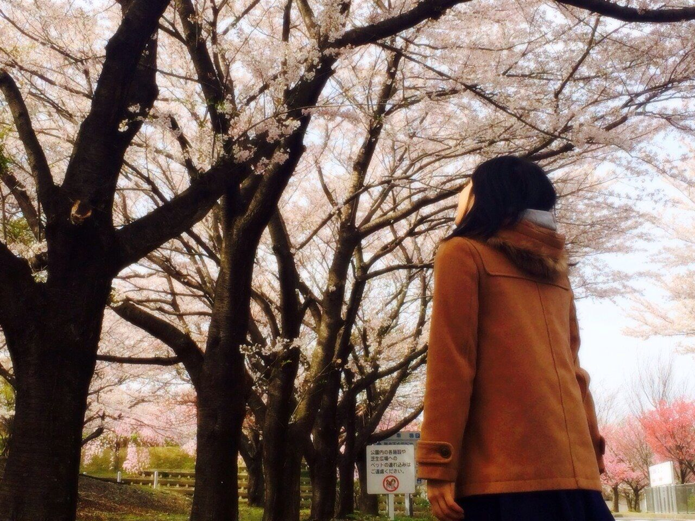

Ayaka
Samano
What's New
- 2016.5.7 Sat
- Release
- 4th Full Album
「月夜の晩に君は来ない」 - 20YY.MM.dd Day
- LIVE
- Monday Night Party Peaple
代官山Air
18:00 Start - 20YY.MM.dd Day
- EVENT
- 「もりもりぽんたの冒険」にゲストとして参加します。
- 20YY.MM.dd Day
- RADIO
- TOKYO FM 13:00-
「高橋みなみのこれから何する？」にゲスト出演します。 - 20YY.MM.dd Day
- RADIO
- TOKYO FM 13:00-
「高橋みなみのこれから何する？」にゲスト出演します。
Profile
佐間野絢香 Ayaka Samano
1979年 浜松市に生まれる。
1985年 6歳でピアノを始め、ヤマハ音楽教室ではピアノとともに作曲も学んだ。
1993年 14歳の時にチェコに行く機会があり、チェコ・フィルハーモニー管弦楽団と共演する機会を持つ。
2003年 バークリー音楽大学を首席で卒業（小曽根真に次ぐ快挙だった）。
2004年 第18回日本ゴールドディスク大賞（主催日本レコード協会）で『アナザー・マインド』がジャズ・アルバム・オブ・ザ・イヤーを受賞する。
Works
Contact